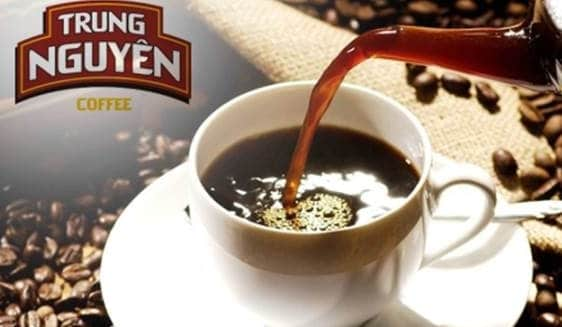

Trung Nguyen coffee is most famous for its strong tase and aroma. It is the leading localbrand Vietnam and a big exporter - you can find Trung Nguyen coffee in over 70 countries in the world. There is a wide range of products diverse in the mix of coffee beans and processing methods.
Trung Nguyen coffee has 3 main types, instant coffe, roasted coffee and distinctive (weasel) one.
|  |
Focusing more on the mild side, Vina Cafe is among the best choices for instant blended coffe. This brand is most famous for its creamy, hazelnutty flavor for those with a sweet tooth. Vina Cafe has been the coffe of our childhood and still most common among Vietnamese households. The most popular ones are VinaCafe 3-in-1, Wake-up Cafe with Weasel Flavor.
3.NescafeNESTCAFE - the famous worldwide brand, comes with a lot of choices for the discerning market of VietNam coffee connoisseurs. Among their products, instants ones are top of mind. Their blened coffee comes in diferent levels ò strong tastes that can be no les delicious than their ground cofe counterparts. Their NESCAFE cans Mocha/Latte are a good choice when you want just a pack of ready-made goodness.